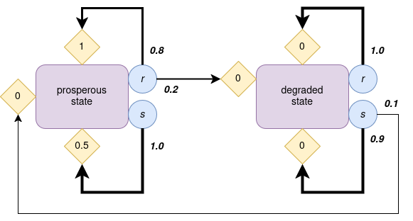
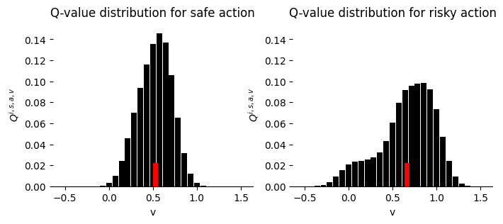
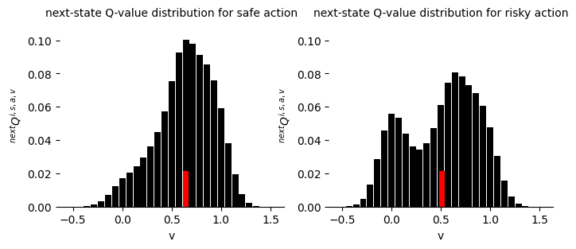
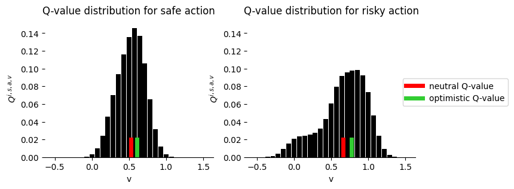
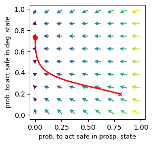

# imports for this notebook
import matplotlib.pyplot as plt
from pyCRLD.Utils import FlowPlot as fp
# test environment
from pyCRLD.Environments.RiskRewardDilemma import RiskRewardDilemma3 DDRL SARSA
In this section, we provide functions that are specific to the SARSA version of Distributional Deterministic Reinforcement Learning.
First, we import everything necessary:
::: {#d58adc28 .cell 0=‘h’ 1=‘i’ 2=‘d’ 3=‘e’}
# Imports for the nbdev development environment
import nbdev
from nbdev.showdoc import *
from fastcore.basics import patch:::
::: {#5d3cec5b .cell 0=‘e’ 1=‘x’ 2=‘p’ 3=‘o’ 4=‘r’ 5=‘t’}
import numpy as np
from scipy.stats import norm
import jax.numpy as jnp
from jax import jit
from functools import partial
import itertools as it
from pyCRLD.Agents.Base import abase
from pyCRLD.Utils.Helpers import *
from pyCRLD.Utils.Helpers import compute_stationarydistribution
from DDRLBase import DDRLBase
from Methods import quantile, expectile, weights:::
Test environment
We use a risk-reward dilemma as a test environment. In this task, the agent can choose between a high-risk, high-gain option, and a low-risk, low-gain option. More precisely, we give our environment the following structure:

If an agent chooses the risky action \(r\) in the prosperous state, it gets a higher reward. But there is a probability that it transitions to a degraded state, where it gets no reward. The only way to escape this degraded state is to choose the safe action, \(s\).
# Define environment
env = RiskRewardDilemma(pc=0.1, pr=0.2, rc=0.5, rr=1, rd=0)
envRiskRewardDilemma_0.1_0.2_0.5_1_0DDRL SARSA class
Now, we can define the DDRL SARSA class:
::: {#6b4ff17e .cell 0=‘e’ 1=‘x’ 2=‘p’ 3=‘o’ 4=‘r’ 5=‘t’}
class DDRLSarsa(DDRLBase):
"""
Base class for SARSA version of DDRL in strategy space.
"""
def __init__(self,
env,
**kwargs):
super().__init__(env, **kwargs):::
We consider the following agent-environment interface: * 1 agent with learning rate \(\alpha=0.1\), discount factor \(\gamma=0.4\), choice intensity \(\beta=50\); * playing the aforementioned risk-reward dilemma.
aei = DDRLSarsa(env,
nr_reward_bins=29,
discretization_sigma=0.1,
learning_rates=0.1,
choice_intensities=50.,
discount_factors=0.4,
Rmin=-0.5,
Rmax=1.5,
use_prefactor=True)No GPU/TPU found, falling back to CPU. (Set TF_CPP_MIN_LOG_LEVEL=0 and rerun for more info.)Computing distributions in DDRL-SARSA
Now we can compute and plot all the distributions we need.
Q-value distributions \(Q^{i,s,a,v}\) and \({}^{next}Q^{i,s,a,\acute v}\)
In detRL, the next-state Q-value for agent \(i\) taking action \(a\) in state \(s\) is averaged over other agents’ actions \(\boldsymbol{a}^{-i}\) and next states \(\acute s\): \[\begin{equation} {}^{next}Q^{i,s,a} = \sum_{\acute s} \sum_{\boldsymbol{a}^{-i}} X^{-i,s,\boldsymbol{a^{-i}}} T^{s,a,\boldsymbol{a}^{-i},\acute s} V^{i, \acute s} \end{equation}\]
In a distributional framework, therefore, \[\begin{equation} {}^{next}Q^{i,s,a,\acute v} = \sum_{\acute s} \sum_{\boldsymbol{a}^{-i}} X^{-i,s,\boldsymbol{a^{-i}}} T^{s,a,\boldsymbol{a}^{-i},\acute s} V^{i, \acute s,\acute v} \end{equation}\]
Just like state values, Q-values conform to the Bellman equation. Therefore, we can obtain the Q-value distribution for agent \(i\), action \(a\) and state \(s\), from the next-state Q-value distribution for \((i,a,s)\), the reward distribution for \((i,a,s)\), and the smoothed Bellman Kronecker delta: \[\begin{equation} Q^{i,s,a,v} = \sum_{r, \acute v} \delta^{i,v,r,\acute v} R^{i,s,a,r} \cdot {}^{next}Q^{i,s,a,\acute v} \end{equation}\]
::: {#90fa8701 .cell 0=‘e’ 1=‘x’ 2=‘p’ 3=‘o’ 4=‘r’ 5=‘t’}
@partial(jit, static_argnums=0)
def Qisaq(self:DDRLSarsa,
Xisa:jnp.ndarray, # Joint strategy
Tisas:jnp.ndarray=None, # Optional transition for speed-up
) -> jnp.ndarray: # Average state-action values
"""
Compute Q-value distribution Qisaq, given joint strategy `Xisa`.
"""
Risar = self.Risar(Xisa)
b_ivrv_ = self.b_ivrv_
Visv = self.Visv(Xisa)
Tisas = self.Tisas(Xisa) if Tisas is None else Tisas
i = 0; s = 1; a = 2; s_ = 3; v = 4; v_ = 5; r = 6
nextQisaq = jnp.einsum(Tisas, [i,s,a,s_], Visv, [i,s_,v], [i,s,a,v],
optimize=self.opti)
Qisaq = jnp.einsum(b_ivrv_, [i,v,r,v_], Risar, [i,s,a,r], nextQisaq, [i,s,a,v_], [i,s,a,v])
return Qisaq
DDRLSarsa.Qisaq = Qisaq:::
We assume that, in both states, the agent takes the safe action with probability 0.2, and the risky action with probability 0.8.
X = np.ones((1, 2, 2)) * 0.2
X[:,:,1] = 1 - X[:,:,0]
Xarray([[[0.2, 0.8],
[0.2, 0.8]]])Now we can plot the Q-value distribution for each action in the prosperous state.
Qq = aei.Qisaq(X)
# Plot Q-value distribution Qisaq for both actions
fig, axes = plt.subplots(1, 2, figsize=(8,3))
actions = ["safe", "risky"]
for a, ax in enumerate(axes):
ax.spines[['right', 'top', 'left']].set_visible(False)
ax.bar(aei.gridpoints, Qq[0,0,a,:], width=0.9*aei.gridwidth, color='k')
rm = np.dot(aei.gridpoints, Qq[0,0,a,:])
ax.plot([rm, rm], [0.0, 0.02], c='red', lw=5)
ax.set_xlabel("v")
ax.set_ylabel(r"$Q^{i,s,a,v}$")
ax.set_title("Q-value distribution for "+str(actions[a])+" action")
ax.set_ylim([0, np.max(Qq[0,0,:,:]+0.01)])
Now we can compute and plot the next-state Q-value distribution
::: {#f43f5399 .cell 0=‘e’ 1=‘x’ 2=‘p’ 3=‘o’ 4=‘r’ 5=‘t’}
@partial(jit, static_argnums=0)
def NextQisaq(self:DDRLSarsa,
Xisa # Joint strategy
) -> jnp.ndarray: # Next values
"""
Compute next-state Q-value distribution NextQisaq,
given joint strategy `Xisa`.
"""
Qisaq = self.Qisaq(Xisa)
i = 0; a = 1; s = 2; s_ = 3; q = 4
j2k = list(range(6, 6+self.N-1)) # other agents
b2d = list(range(6+self.N-1, 6+self.N-1 + self.N)) # all actions
e2f = list(range(5+2*self.N, 5+2*self.N + self.N-1)) # all other acts
sumsis = [[j2k[l], s, e2f[l]] for l in range(self.N-1)] # sum inds
otherX = list(it.chain(*zip((self.N-1)*[Xisa], sumsis)))
NextQisq = jnp.einsum(Qisaq, [i, s_, a, q], Xisa, [i, s_, a], [i, s_, q])
args = [self.Omega, [i]+j2k+[a]+b2d+e2f] + otherX +\
[self.T, [s]+b2d+[s_], NextQisq, [i, s_, q], [i, s, a, q]]
return jnp.einsum(*args, optimize=self.opti)
DDRLSarsa.NextQisaq = NextQisaq :::
Qq = aei.NextQisaq(X)
# Plot next-state Q-value distribution nextQisaq for both actions
fig, axes = plt.subplots(1, 2, figsize=(8,3))
actions = ["safe", "risky"]
for a, ax in enumerate(axes):
ax.spines[['right', 'top', 'left']].set_visible(False)
ax.bar(aei.gridpoints, Qq[0,0,a,:], width=0.9*aei.gridwidth, color='k')
rm = np.dot(aei.gridpoints, Qq[0,0,a,:])
ax.plot([rm, rm], [0.0, 0.02], c='red', lw=5)
ax.set_xlabel("v")
ax.set_ylabel(r"${}^{next} Q^{i,s,a,v}$")
ax.set_title("next-state Q-value distribution for "+str(actions[a])+" action",
fontsize=10)
ax.set_ylim([0, np.max(Qq[0,0,:,:]+0.01)])
(Biased) Q-value \(Q^{i,s,a}\)
An estimate of the Q-value is the mean of the Q-value distribution. But a biased agent will get an optimistic or a pessimistic estimate of this distribution. To obtain this biased estimate, we can apply the quantile, expectile, or weights method to the value distribution. To know more about these methods, please refer to the Biasing Methods section.
Here, we compute the (biased) Q-value from the previous Q-value distribution. When the weights method is used, we take the state Q-value \(Q^{i,s}\) as a baseline:
::: {#c0472f19 .cell 0=‘e’ 1=‘x’ 2=‘p’ 3=‘o’ 4=‘r’ 5=‘t’}
@partial(jit, static_argnums=0)
def Qis(self:DDRLSarsa,
Xisa) -> jnp.ndarray:
"""
Compute Q-value for state `s`.
"""
Qisaq = self.Qisaq(Xisa)
Qisa = jnp.einsum('ijkl,l->ijk', Qisaq, self.gridpoints)
i = 0; a = 1; s = 2
Qis = jnp.einsum(Qisa, [i, s, a], Xisa, [i, s, a], [i, s])
return Qis
DDRLSarsa.Qis = Qis:::
::: {#ba81d878 .cell 0=‘e’ 1=‘x’ 2=‘p’ 3=‘o’ 4=‘r’ 5=‘t’}
@partial(jit, static_argnums=0)
def Qisa(self,
Xisa:jnp.ndarray, # Joint strategy
) -> jnp.ndarray: # Average state-action values
"""
Compute Q-value for state `s` and action `a`.
"""
Qisaq = self.Qisaq(Xisa) # Q-value distrib
gpoints = jnp.ones((self.nr)) * -1
gpoints = gpoints.at[:].set(self.gridpoints)
if self.method=='mean': # take mean
Qisa = jnp.einsum('ijkl,l->ijk', Qisaq, gpoints)
elif self.method=='quantile': # use quantile
Qisa = quantile(self.tau, Qisaq, gpoints)
elif self.method=='expectile': # use expectile
Qisa = expectile(self.tau, Qisaq, gpoints)
elif self.method=='weights': # use weights
Qis = self.Qis(Xisa)
Qisa = jnp.repeat(Qis[..., jnp.newaxis], self.M, axis=-1)
w = jnp.ones((self.N, self.Z, self.M, len(self.gridpoints)))
n = jnp.newaxis
upper = self.gridpoints[n,n,n,:] >= Qisa[:,:,:,n]
upper = upper * (self.wU - 1)
w = w + upper
wQisaq = weights(w, Qisaq, gpoints)
Qisa = jnp.einsum('ijkl,l->ijk', wQisaq, gpoints) # take the new distrib's mean
return Qisa
DDRLSarsa.Qisa = Qisa :::
Here, we define an optimistic agent, and we compare neutral and optimistic estimates of the Q-value.
## Define optimistic agent
aei_opt = DDRLSarsa(env,
nr_reward_bins=29,
discretization_sigma=0.1,
learning_rates=0.1,
choice_intensities=50.,
discount_factors=0.4,
Rmin=-0.5,
Rmax=1.5,
use_prefactor=True,
method="weights",
wU=3)Qq = aei.Qisaq(X)
qm = aei.Qisa(X)[0,0]
qm_opt = aei_opt.Qisa(X)[0,0]
# Plot Q-value distribution Qisaq for both arms
fig, axes = plt.subplots(1, 2, figsize=(8,3))
actions = ["safe", "risky"]
for a, ax in enumerate(axes):
ax.spines[['right', 'top', 'left']].set_visible(False)
ax.bar(aei.gridpoints, Qq[0,0,a,:], width=0.9*aei.gridwidth, color='k')
ax.plot([qm[a], qm[a]], [0.0, 0.02], c='red', lw=5,
label="neutral Q-value")
ax.plot([qm_opt[a], qm_opt[a]], [0.0, 0.02], c='limegreen',
lw=5, label="optimistic Q-value")
ax.set_xlabel("v")
ax.set_ylabel(r"$Q^{i,s,a,v}$")
ax.set_title("Q-value distribution for "+str(actions[a])+" action")
ax.set_ylim([0, np.max(Qq[0,0,:,:]+0.01)])
axes[1].legend(bbox_to_anchor=(0.9, 0.6))
Temporal-difference error
From the Q-value estimate, we can compute the temporal-difference error:
::: {#40ac11e7 .cell 0=‘e’ 1=‘x’ 2=‘p’ 3=‘o’ 4=‘r’ 5=‘t’}
@partial(jit, static_argnums=(0,2))
def TDerror(self:DDRLSarsa,
Xisa, # Behavior profiles
norm=False) -> jnp.ndarray:
"""
Compute reward-prediction/temporal-difference error for
strategy SARSA dynamics, given joint strategy `Xisa`.
"""
Q = self.Qisa(Xisa)
n = jnp.newaxis
E = Q - (1 / self.beta[:,n,n]) * jnp.log(Xisa)
E *= self.beta[:,n,n]
E = E - E.mean(axis=2, keepdims=True) if norm else E
return E
DDRLSarsa.TDerror = TDerror:::
It is now possible to plot our SARSA agent’s deterministic trajectory in phase space.
# Flow Plot
fig, ax = plt.subplots(1,1, figsize=(3,3))
x = ([0], [0], [0]) # prosperous state
y = ([0], [1], [0]) # degraded state
# Flow plot
fp.plot_strategy_flow(aei, x, y, flowarrow_points = np.linspace(0.01 ,0.99, 9),
NrRandom=16, axes=ax)
# Example trajectory
Xinit = np.ones((1,2,2)) * 0.8
Xinit[0,1,0] = 0.2
Xinit[:,:,1] = 1 - Xinit[:,:,0]
trj, fpr = aei.trajectory(Xinit, Tmax=1000, tolerance=1e-6)
fp.plot_trajectories([trj], x, y, fprs=[fpr], axes=ax, cols=['red'])
ax.set_xlabel("prob. to act safe in prosp. state", fontsize=9)
ax.set_ylabel("prob. to act safe in deg. state", fontsize=9)Text(0, 0.5, 'prob. to act safe in deg. state')
nbdev.export.nb_export("02.02_DDRLSarsa.ipynb", "")